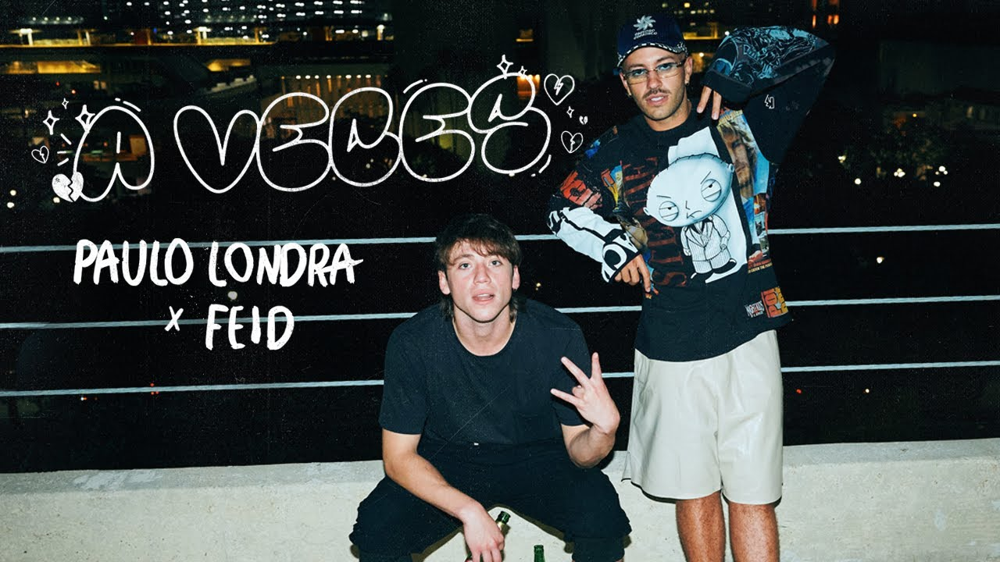
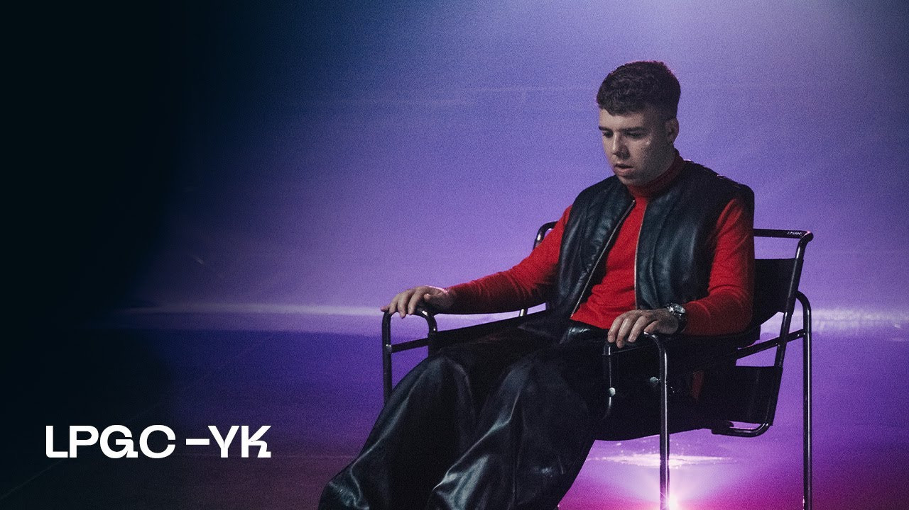

Música:

A Veces, Paulo Londra x Feid
El conocido artista Paulo Londra vuelve con una nueva canción.
Despues de su problema con la productora argentina Big Ligas no había vuelto a sacar canciónes del género urbano,
pero eso acaba de cambiar, ya que el día 7 de noviembre lanzo un nuevo hit de este género, el cual era muy esperado por todos

Punto G, Quevedo
El día 7 de noviembre Quevedo lanzo un hit en todas las plataformas de reproducción llamado Punto G. Esta es su 3era canción desde su máximo hit la BZRP Music Sessions #52,
canción que estuvo en el top 1 de multiples rankings durante varias semanas.
Se espera que esta canción tenga el mismo exito ya que se mantiene en el mismo género.